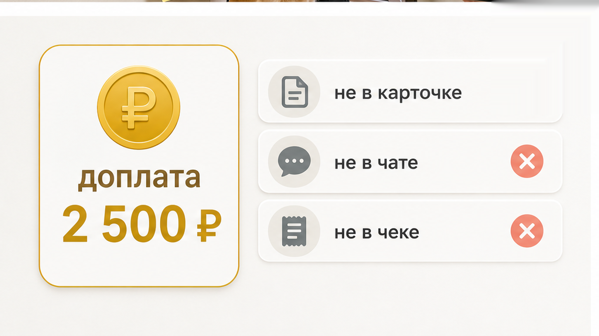
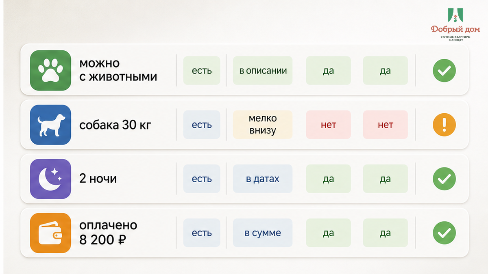
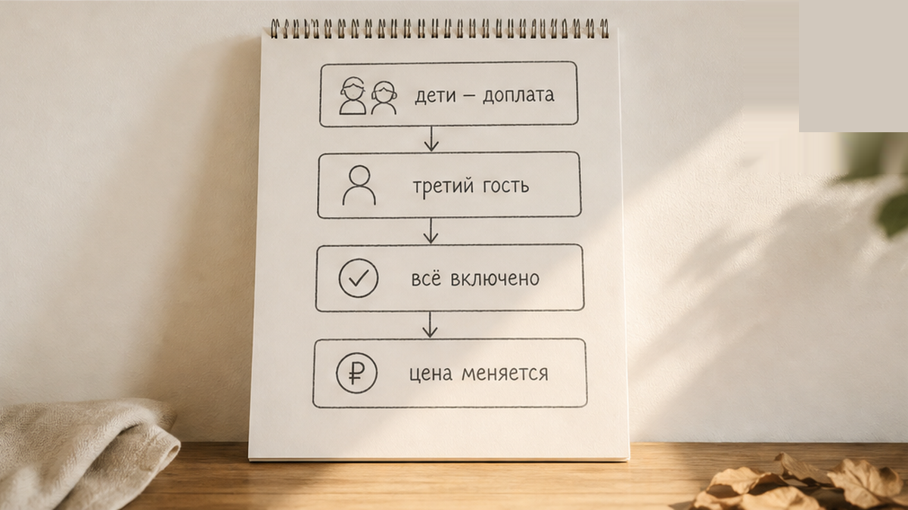
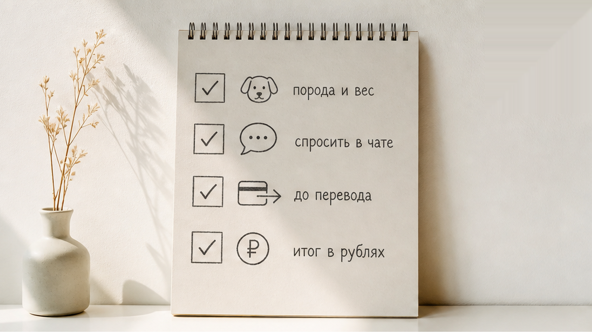
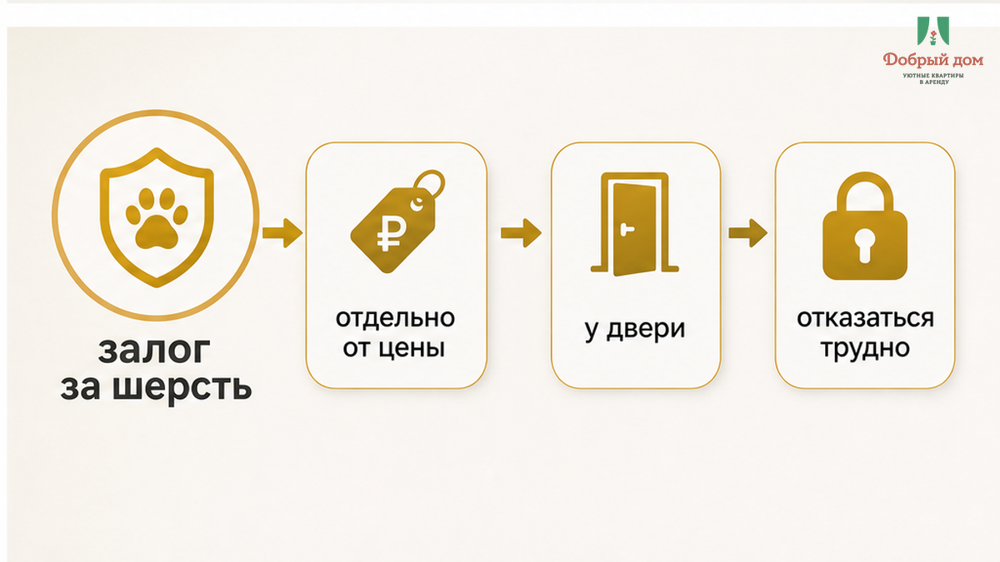
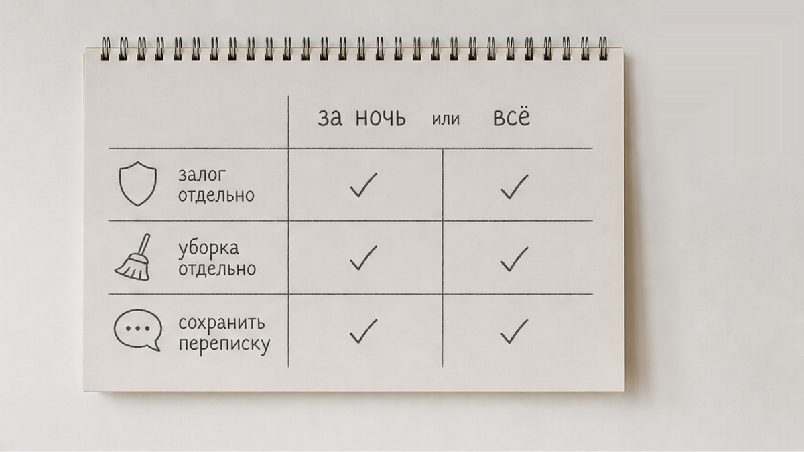

«За крупную породу — две с половиной тысячи. Это в правилах», — сказал хост у подъезда, не убирая руку с ключей. Гость стоял с сумкой на плече и поводком в кулаке. На поводке — лабрадор весом около тридцати килограммов, уставший от дороги не меньше хозяина. «В карточке написано: можно с собакой. Мы уже оплатили», — ответил гость. Оплачено было 8 200 ₽ за две ночи: один взрослый, одна собака, всё по объявлению, где стоял значок «Можно с животными». Но у двери к этой сумме внезапно добавились ещё 2 500 ₽ — отдельной строкой, которой не было ни в карточке, ни в переписке, ни в чеке. Следом прозвучало: «И залог за шерсть — отдельно, если что».
Сломалось здесь не «дорого». Сломалось равенство, которое гость держал в голове всю дорогу: значок «можно с собакой» означает, что собака входит в оговорённую цену. Хост прочитал тот же значок иначе: животное разрешено, а тариф за «крупную породу» появится при заселении. Это не спор о двух с половиной тысячах. Это внезапная сумма на пороге, когда за спиной дорога, в руке поводок, а искать новое жильё после приезда уже поздно.
Я хост посуточной в Тюмени. Это «Добрый дом». Мы пишем условия по животным в Telegram или MAX до перевода, потому что у двери с уставшей собакой человек уже не выбирает условия — он решает, платить или разворачиваться. Ни имён, ни адреса, ни площадки в этом составном кейсе нет. 2 500 ₽ — редакционная цифра для примера, не наш тариф и не «средняя по городу».


«Можно с животными» — это не готовый счёт за любую собаку любого размера. За одним значком могут скрываться лимит по весу, ограничение по количеству животных, правила по мебели и спальным местам, отдельная уборка или залог. Такие условия сами по себе не выглядят странными, если их называют до оплаты. Проблема начинается тогда, когда они возникают только у двери.
Модель оплаты тоже бывает разной. Это может быть одна сумма за весь заезд, доплата за каждую ночь, увеличенный залог или отдельная уборка после выезда. При двух ночах разница особенно заметна: одна строка за проживание и две строки по числу ночей — это уже разные итоги. Гость не обязан угадывать, какую модель держал в голове хост.
В описаниях сервисов бронирования и в рекомендациях для хозяев обычно советуют заранее указывать дополнительные услуги, залог и уборку. Но сам значок не подставляет эти суммы в каждую бронь автоматически. Если объект принимает гостей напрямую, единственным понятным документом становится переписка. В ней и должны остаться порода, вес, сумма за питомца, срок оплаты и условия возврата залога.
А теперь вопрос, который лучше задать до перевода: лабрадор — это «крупная порода» в вашей карточке или только в голове хоста? Если ответ существует лишь у хоста, гость узнает о нём слишком поздно.



Пока человек выбирает жильё, он сравнивает варианты и может уйти. У подъезда ситуация меняется: бронь оплачена, дорога закончилась, собака ждёт, когда её впустят, а подходящее жильё нужно искать заново. Цена отказа становится выше, чем была в момент бронирования. Поэтому невысказанная строка так часто появляется именно на пороге.
Тот же механизм виден в истории «можно с детьми», после которой попросили доплату за ребёнка. Значок читается как разрешение и как включённая цена, а затем оказывается только разрешением. Похожая ситуация — когда оплатили за двоих, а у двери попросили доплату за третьего. Меняется повод, но место конфликта одно: условие не было названо до оплаты.
С шерстью появляется второй слой спора. Хост может считать её основанием для специальной уборки, а гость — частью обычной уборки после проживания. Здесь работает та же логика, что в кейсе, где «всё включено», но доплату попросили уже по приезде: слово «включено» не помогает, пока не сказано, что именно входит в сумму.
Поэтому до оплаты нужно одной фразой спросить про шерсть: является ли она основанием для удержания залога, какая сумма возможна и что хозяин считает обычной уборкой. В отдельной истории про включённую уборку и счёт за грязные простыни спор возник по той же причине — стороны по-разному понимали одно слово.
Доплата за собаку при значке «можно с животными» — это нормальное условие или подстава? Напишите в Telegram или MAX: по переписке обычно видно, была ли сумма оговорена заранее.

Я не считаю доплату за питомца чем-то неправильным. Собака действительно может означать дополнительную уборку, нагрузку на текстиль и риск для мебели. Хост вправе заложить это в цену. Но плата, названная в объявлении и подтверждённая в чате, — условие проживания. Та же плата, предъявленная у двери с ключами в руке, превращается в давление.
Нет. Так не заселяем. У нас человек заранее сообщает вид, породу и вес животного, получает сумму и правила по залогу в переписке и только потом переводит деньги. Вход в квартиру не должен становиться моментом, когда появляется второй счёт.
Сначала проверка. Потом перевод. Не наоборот. Перед бронью достаточно шести вопросов:
Если бронь проходит через площадку, итоговая сумма должна быть понятна на этапе оплаты. Если напрямую — все договорённости должны остаться в чате. Про залог и возврат после выезда есть отдельные материалы в нашем блоге. Главное здесь простое: «Можно с собакой» — это открытая дверь, а не разрешение дописать цену на пороге.
Нужна квартира посуточно в Тюмени, куда можно с собакой без сюрпризов? Напишите менеджеру: Telegram, MAX, @Dobriy_dom_Tyumen. Забронировать можно здесь: добрыйдом-72.рф/booking. Сайт: добрыйдом-72.рф. Телефон: +7 (993) 574-83-22.